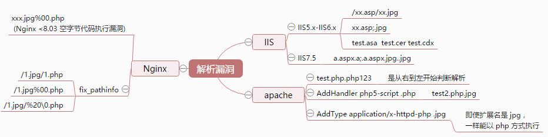
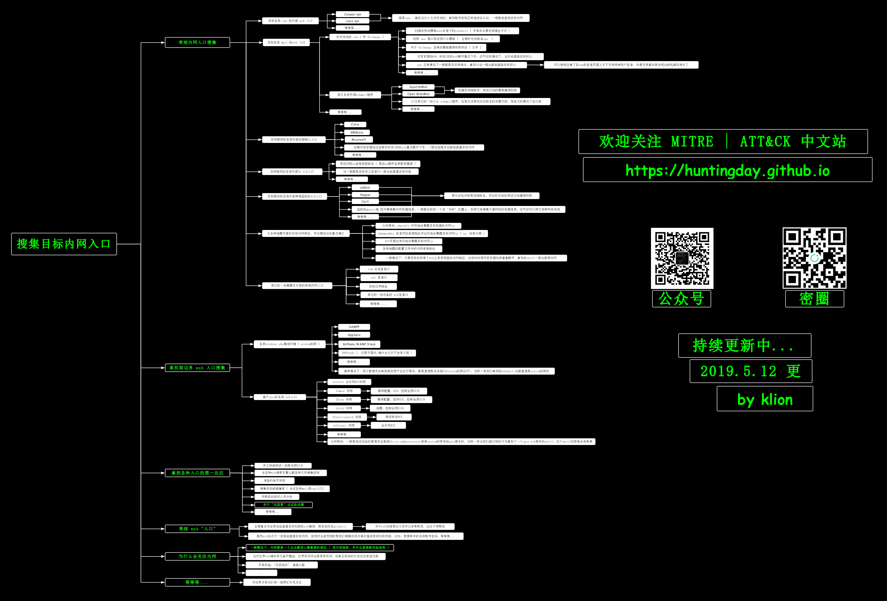
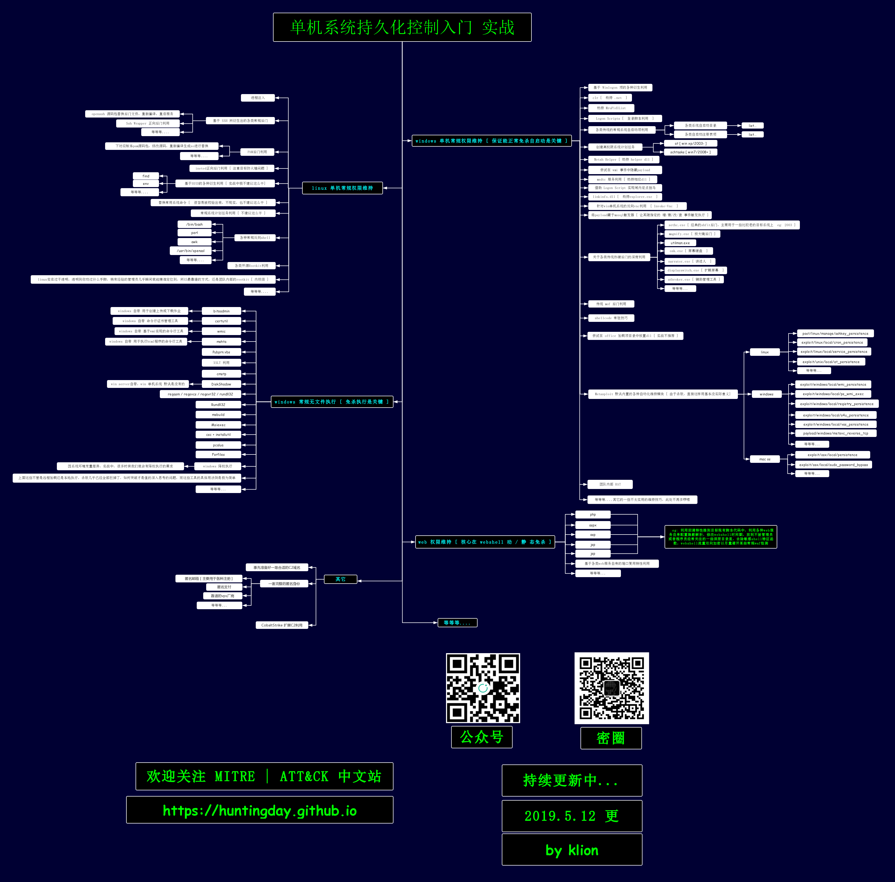
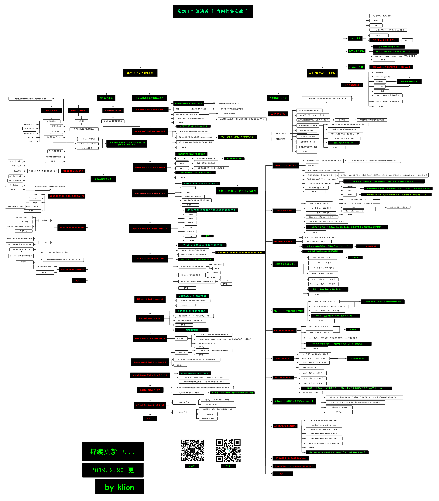
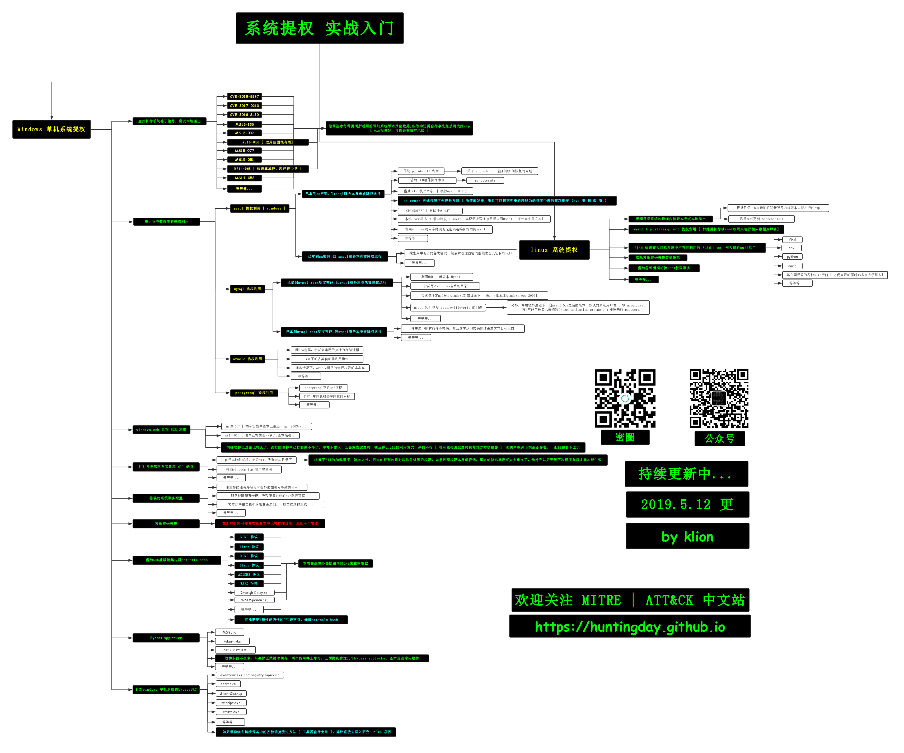
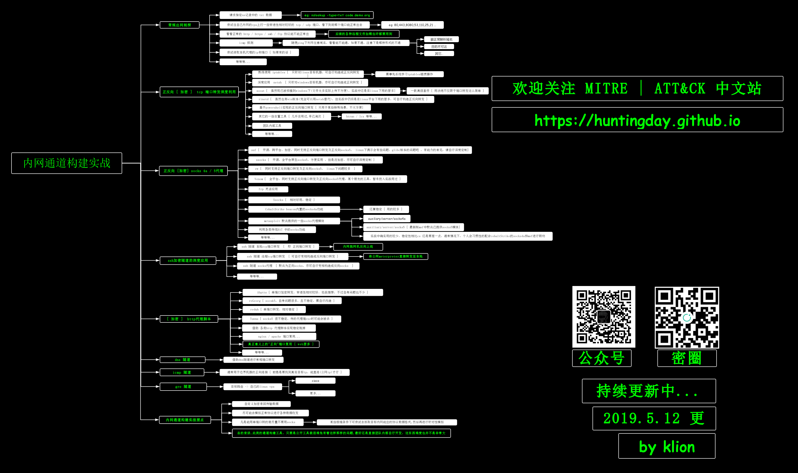
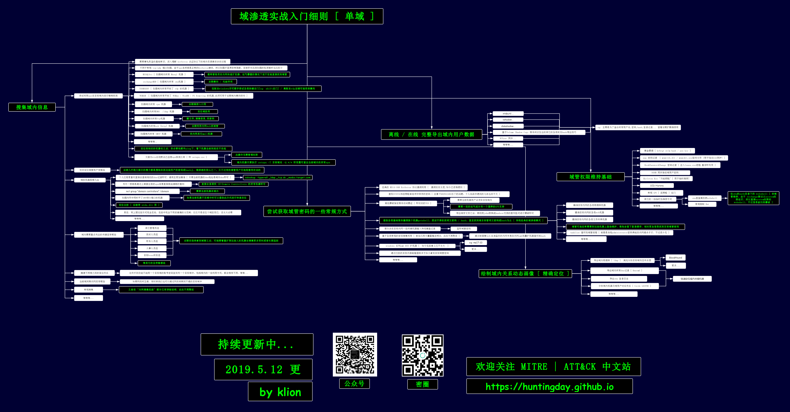
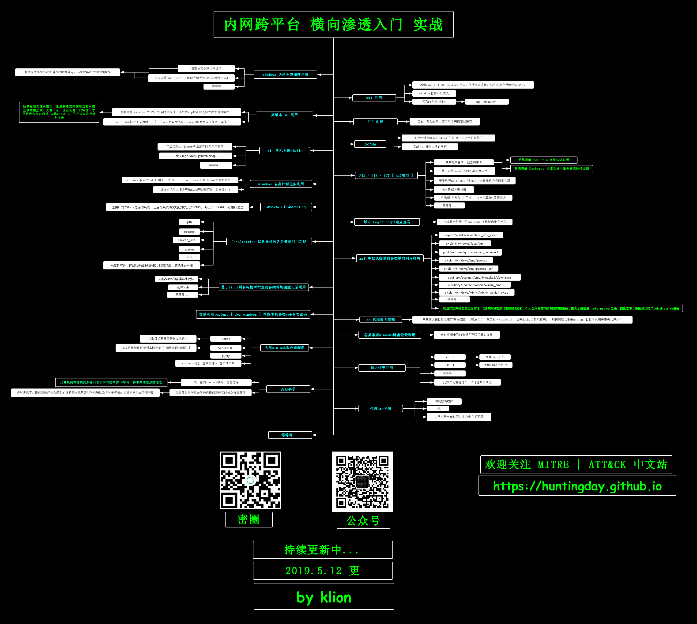
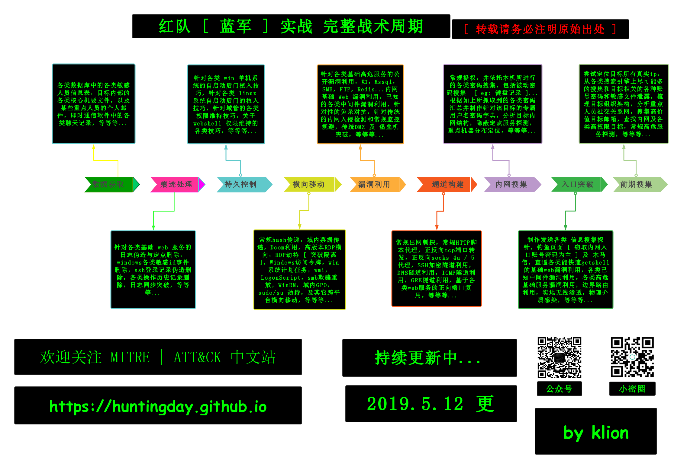

笔记
常见默认端口
sqlserver：1433
redis：6379
oracle：1521
serv-U：43958sqlserver
判断当前用户身份
- 判断是否为sa：select is_srvrolemember(‘sysadmin’);
- 判断是否为dbowner：select is_member(‘dbowner’);
- 判断是否为public：select is_srvrolemember(‘public’);
若为sa权限
- select count(*) from master..sysobjects where name=’xp_cmdshell’ and xtype=’X’;
- 开启xp_cmdshell
- exec sp_configure ‘show advanced options’,1;
- exec reconfigure;
- exec sp_configure ‘xp_cmdshell’,1;
- exec reconfigure;
- exec xp_cmdshell ‘whoami’;
- declare @shell int exec sp_oacreate ‘wscript.shell’,@shell output exec sp_oamethod @shell,’run’,null,’whoami’; //判断是否开启sp_oacreate
应急响应Windows篇
日志和记录
- 开始→设置→控制面板→管理工具→事件查看器（eventvwr.msc）
- Windows日志文件默认位置是%systemroot%\system32\config
- 安全日志文件：%systemroot%\system32\config\SecEvent.EVT
- 系统日志文件：%systemroot%\system32\config\SysEvent.EVT
- 应用程序日志文件：%systemroot%\system32\config\AppEvent.EVT
- FTP连接日志和HTTPD事务日志：%systemroot%\system32\LogFiles\
- IIS日志默认存放在System32\LogFiles目录下，使用W3C扩展格式
进程和端口
- netstat -ano
- 进程对应的服务：tasklist /svc
- 获取Windows上所有启动项的名称与执行程序所在路径：wmic startup get caption,command
用户和用户组
资源占用
计划任务
- 管理->任务计划程序->任务计划程序库（taskschd.msc）
木马，shell，文件，后门
- D盾: http://www.d99net.net/down/WebShellKill_V2.0.9.zip
- 找到web服务器目录，对其进行木马文件查找
- mysql\lib\plugin目录是否存在异常文件，
- select * from mysql.func是否存在函数，可能是udf提权。
启动项
应急响应之Linux篇
日志和记录
- histroy bash
- /var/log/wtmp：记录每个用户的登录次数和持续的时间等信息
- /var/log/utmp：有关当前用户登陆的信息
- lastlog： 最后一次登陆信息
进程和端口
- netstat -anlpte
- lsof(list open files)
- lsof -i :[port]: 查看什么文件占用的该端口
- lsof -p [pid]: 查看什么文件占用的该pid
- ps -aux
- ps -ef
用户和组
- /etc/passwd
- /etc/shadow
- /etc/group
资源占用
- top
计划任务- crontab -l: 查看当前用户的定时计划任务
- crontab -r: 删除计划任务
webshell,木马,文件
- 河马: https://www.shellpub.com/
- 在线: WEBDIR+ - https://scanner.baidu.com/#/pages/intro
rootkit
- chkootkit检测: http://www.chkrootkit.org/
- rkhunter检测: rkhunter.sourceforge.net
- clamav: http://www.clamav.net/download.html
- Gscan: https://github.com/grayddq/GScan
备忘录-Linux各种日志的作用
Linux安全加固
账号与口令
- 禁用或锁定无用账号
- 检查特殊账号
- 添加口令策略
- 限制sudoers
- 禁止root用户直接登录
服务- 关闭不必要的服务
- SSH服务安全
文件系统
日志
IP协议安全要求
Linux验证失败次数超阈值锁定
Windows安全加固
账户管理与认证授权
日志配置
域
域信息查看
- 查询域控制器主机名：net group “domain controllers” /domain
- 查询域管理用户：net group “domain admins” /domain
- 查询域内所有机器名：net group “Domain computers”
- 查询域时间：net time /domain
- 查看当前登录域：set l (其中logonserver的值即为当前登录域)
- 查看所有域用户： net user /domain
- 查询当前登陆域：net config workstation
- 查询域密码策略：net accounts /domain
- 查看补丁信息：wmic qfe或者systeminfo
- 查看操作系统类型：wmic os
命令行信息查看:
- 进程列表: tasklist /v
- whoami /priv
- whoami /user
- systeminfo
- netstat -ano
- arp -a
- hostname
- ipconfig /all
- tasklist /v
- 查看防护软件： wmic /Node:localhost /Namespace:\root\SecurityCenter2 Path AntiVirusProduct Get DisplayName /Format:List
- 查看安装的软件：wmic product get name, version
- 查看在线用户： quser
- route print
- wmic cpu
- wmic memorychip
- 查看计划任务：schtasks /query
- 日志查看器：eventvwr.msc
Mysql相关的SQL注入，5.0以上和5.0以下有什么区别
- 5.0以下没有information_schema这个系统表，无法列表名等，只能暴力跑表名。
- 5.0以下是多用户单操作，5.0以上是多用户多操做。
已知哪些版本的容器有解析漏洞
- IIS 6.0：/xx.asp/xx.jpg “xx.asp”是文件夹名
- IIS 7.0/7.5：默认Fast-CGI开启，直接在url中图片地址后面输入/1.php，会把正常图片当成php解析
- Nginx: 版本小于等于0.8.37，利用方法和IIS 7.0/7.5一样，Fast-CGI关闭情况下也可利用。
- Nginx：空字节代码 xxx.jpg%00.php
- Apache：上传的文件命名为：test.php.x1.x2.x3，Apache是从右往左判断后缀
- 
sqlmap使用
- 如果是get型号，直接，sqlmap -u “诸如点网址”.
- 如果是post型诸如点，可以sqlmap -u “注入点网址” –data=”post的参数”
- 如果是cookie，X-Forwarded-For等，可以访问的时候，用burpsuite抓包，注入处用*号替换，放到文件里，然后sqlmap -r “文件地址”
owasp top 10
- SQL注入防护方法：
- 失效的身份认证和会话管理
- 跨站脚本攻击XSS
- 直接引用不安全的对象
- 安全配置错误
- 敏感信息泄露
- 缺少功能级的访问控制
- 跨站请求伪造CSRF
- 使用含有已知漏洞的组件
- 未验证的重定向和转发
代码执行，文件读取，命令执行的函数
- 代码执行：eval、preg_replace+/e、assert、call_user_func、call_user_func_array、create_function
- 文件读取：file_get_contents()、highlight_file()、fopen()、read file()、fread()、fgetss()、fgets()、parse_ini_file()、show_source()、file()
- 命令执行：system()、exec()、shell_exec()、passthru()、pcntl_exec(), popen()、proc_open()
步骤与流程：
在获取书面授权的前提下。
信息收集，
- 获取域名的whois信息,获取注册者邮箱姓名电话等。
- 查询服务器旁站以及子域名站点，因为主站一般比较难，所以先看看旁站有没有通用性的cms或者其他漏洞。
- 查看服务器操作系统版本，web中间件，看看是否存在已知的漏洞，比如IIS，APACHE,NGINX的解析漏洞
- 查看IP，进行IP地址端口扫描，对响应的端口进行漏洞探测，比如 rsync,心脏出血，mysql,ftp,ssh弱口令等。
- 扫描网站目录结构，看看是否可以遍历目录，或者敏感文件泄漏，比如php探针
- google hack 进一步探测网站的信息，后台，敏感文件
漏洞扫描
- 开始检测漏洞，如XSS,XSRF,sql注入，代码执行，命令执行，越权访问，目录读取，任意文件读取，下载，文件包含，远程命令执行，弱口令，上传，编辑器漏洞，暴力破解等
漏洞利用
- 利用以上的方式拿到webshell，或者其他权限
权限提升
- 提权服务器，比如windows下mysql的udf提权，serv-u提权，windows低版本的漏洞，如iis6,pr,巴西烤肉，linux藏牛漏洞，linux内核版本漏洞提权，linux下的mysql system提权以及oracle低权限提权
日志清理
总结报告及修复方案
internel network pentest：
- 
- 
- 
- 
- 
- 
- 
- 
内网渗透
进入内网的方式：
- 常规漏洞如文件上传，注入，命令执行，代码执行，利用已知中间件漏洞getshell等
- 非常规的如VPN，钓鱼邮件等。
- 暴露在公网上的存在已知漏洞的操作系统等。
一般步骤
- 打入内网
- 提权
- 信息搜集
- 横向移动
- 劫持整个内网
- 权限维持
应急响应
例1. 挖矿病毒
- 定位进程及文件，取消可执行权限或者删除可执行文件之后，观察是否被恢复。
- 检查启动项,检查命令执行历史记录，日志,用户情况，网络连接
- 检查是否存在rootkit，使用chkrootkit/rthunter等工具
- 获取样本用于溯源，逆向分析病毒行为等
- 使用工具查杀
- 恢复业务